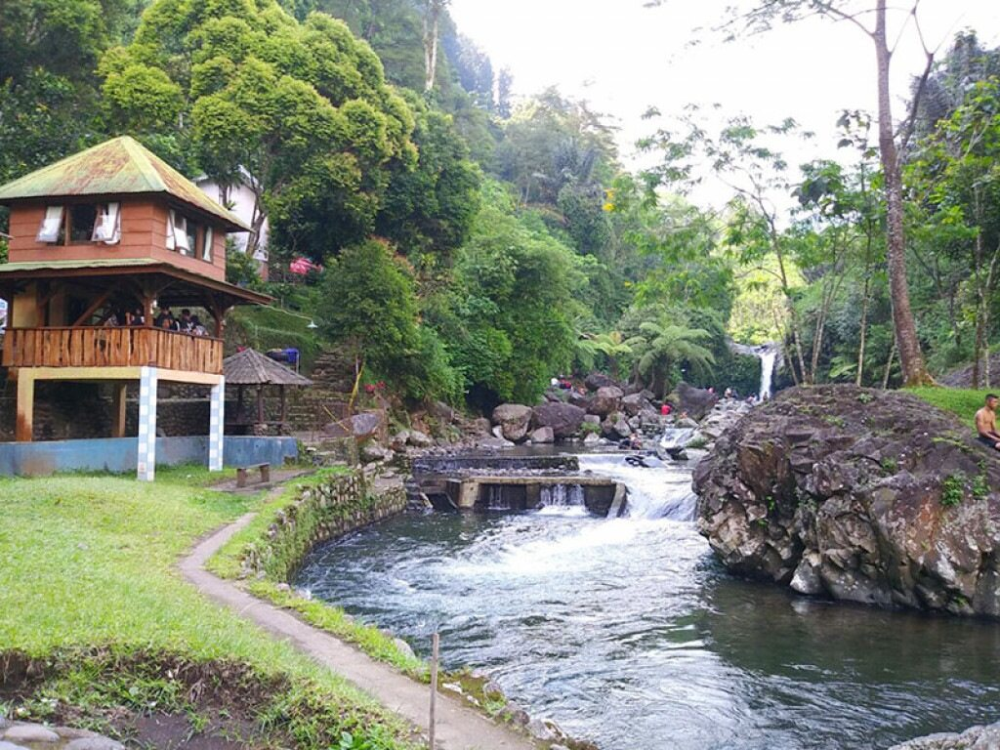

Dufan
Dunia Fantasi (atau juga disebut Dufan) adalah sebuah taman hiburan yang terletak di kawasan Taman Impian Ancol, Jakarta Utara, Indonesia yang diresmikan dan dibuka untuk umum pada tanggal 29 Agustus 1985.
Fasilitas yang ada di Dufan
- Free Wifi, Charger Point, Toilet bersih disetiap kawasan dan wahana, Baby Care Room, Mushola dan Masjid, P3K & Ambulance.
Sejarah Dufan
Proyek Dunia Fantasi dicanangkan pada awal tahun 1980 dimana pada saat itu Taman Impian Jaya Ancol masih
dibawah kepemimpinan bapak Handogo Soekarno yang menjabat sebagai kepala divisi promosi Taman Impian
Jaya Ancol. Pada saat itu, Handogo memberikan mandat kepada Benny Benhardi untuk membuat ilustrasi
menggunakan Birds Eye View. Pengerjaan ini dibuat di kantor Arsitektur Balai Samudra dibawah arahan
Bapak Sutisna dan arsitek senior Budi Priambodo serta beberapa juru gambar. Dunia Fantasi mempunyai
beberapa maskot yang salah satunya berupa kera bekantan yang diberi nama
Dufan (singkatan dari Dunia
Fantasi). Dipilihnya kera sebagai karakter adalah untuk mengingatkan bahwa Ancol dahulu adalah kawasan
Kera. Sedangkan pemilihan kera bekantan adalah semata-mata untuk mengenalkan jenis satwa langka yang
kini dilindungi. Pada awalnya, Bentuk karikatural kera bekantan ini divisualisasikan oleh Matari
Advertising yang ikut serta dalam program komunikasi awal Dunia Fantasi karena pada saat itu, Agustinus
Teddy Darmanto selaku ketua sekaligus penanggung jawab BenDufa (Bengkel Dunia Fantasi) sangat sibuk
dalam tahap penyelesaian akhir. Oleh karena itu, pengvisualisasian diberikan pada Matari Advertising.
Namun setelah Dunia Fantasi dibuka untuk umum, visualisasi karakter Dufan diambil alih kembali oleh tim
BenDufa dan kemudian terciptalah logo beserta karakter-karakter Dunia Fantasi.